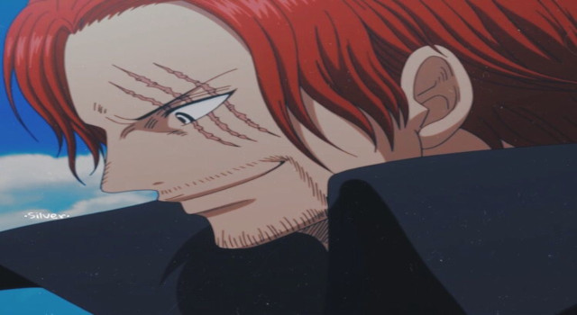
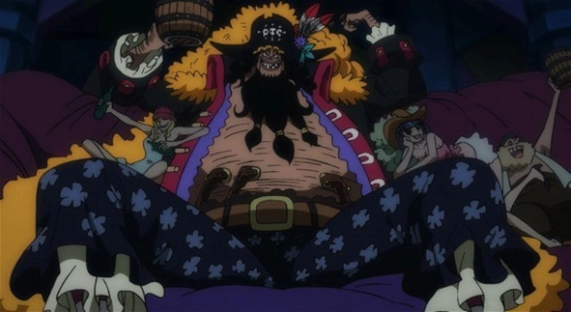
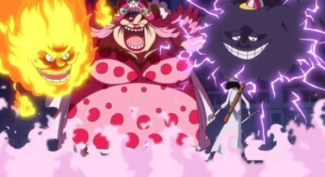
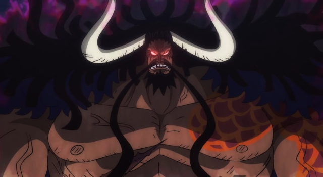

História
Os "Yonkou" (ou "Yonko") ou "Quatro Imperadores" atuais são Charlotte Linlin, Kaido, Shanks e Marshall D. Teach. Esses capitães ganharam a reputação de serem os piratas mais poderosos de One Piece. E isso não apenas por seus poderes físicos, mas também por sua influência por toda a Grand Line, governando o Novo Mundo. Os Yonkou, inclusive, fazem parte dos chamados "Três Grandes Poderes", as três maiores forças militares dos oceanos, junto à Marinha e aos Sete Senhores da Guerra do Mar.
Shanks (O ruivo)
Shanks foi o primeiro Yonkou apresentado em One Piece e tem importante papel na trajetória do protagonista Luffy. Além de ser o pirata que inspirou um Luffy ainda bem jovem a sonhar com a vida na pirataria, Shanks perdeu seu braço para salvar o garoto, e deu a ele o chapéu de palha que se tornou seu símbolo mais forte. Foi ainda seu companheiro de tripulação, Lucky Roux, que encontrou a Gomu Gomu no Mi, que Luffy viria a comer acidentalmente.
Sua influência no mundo dos piratas e suas habilidades de diplomacia são vistas pelo anime, como quando pôs um fim a batalha de Marineford simplesmente por aparecer. Além disso, sua recompensa é de $4,048,900,000. O reencontro entre ele e Luffy é um dos momentos mais aguardados do anime, e Shanks acompanha, orgulhoso, de longe o progresso do pirata. Após as ações de Luffy contra a Big Mom, ele afirmou que o capitão dos Piratas do Chapéu de Palha estava quase pronto para encontrá-lo novamente.
Marshall D. Teach (Barba Negra)
Com certeza um dos piratas mais fortes de One Piece, Teach começou sua trajetória na tripulação Piratas Barba Branca. Porém, ele deixou o grupo após matar Thatch para obter sua fruta do diabo. Quando ainda era visto apenas como um dos Sete Senhores da Guerra do Mar, derrotou e entregou Ace para a Marinha. O título de Imperador/Yonkou ele recebeu após matar Edward Newgate, o Barba Branca, durante a Guerra de Marineford. Também derrotou todos os piratas Barbara Branca durante o salto temporal da história.
Foi do corpo de seu antigo capitão Barba Branca que Teach adquiriu os poderes de sua segunda fruta do diabo, se tornando a única pessoa de que se tem registro detentora de duas Akuma no Mi. Suas ações também lhe renderam a recompensa de $2,247,600,000.
Charlotte Linlin (Big Mom)
Charlotte Linlin é matriarca da Família Charlotte, que consiste em seus 46 filhos e 39 filhas. Ela já fez parte da tripulação dos Piratas Rocks, e é a atual rainha da Ilha Totto. Seu principal objetivo é formar uma sociedade utópica na qual todas as raças possam conviver em paz. Contudo, ela não mede esforços ou poupa destruição para chegar aonde deseja. Não à toa, a personagem é a principal antagonista do Arco Ilha Whole Cake, a segunda antagonista da segunda metade do Arco País de Wano, e uma das antagonistas centrais da Saga Quatro Imperadores.
Durante o período em que integrou os Piratas Rocks, lutou contra Gol D. Roger e Monkey D. Garp, e foi a responsável por dar uma fruta do diabo a Kaido, algo que ela diz tê-lo deixado em dívida com ela. Anos depois formou sua própria tripulação e foi ganhando grande influência. Big Mom é conhecida por ser extremamente vaidosa, orgulhosa, ambiciosa, com personalidade infantil, egoísta e violenta, e deseja se tornar a Rainha Pirata. Sua recompensa é $4,388,000,000.
Kaido (Kaido das cem feras)
Antagonista principal do Arco País Wano e um dos antagonistas centrais da Saga Quatro Imperadores, Kaido compartilhou o início de sua trajetória como pirata com Charlotte Linlin, nos Piratas Rocks. Após a Big Mom lhe dar a Uo Uo no Mi, ele adquiriu o poder de se transformar em um dragão. A partir daí, deu início a sua própria tripulação, os Piratas das Bestas. Seu sonho é que, um dia, todos os integrantes tenham o poder de transformar em animais.
O mais forte dos quatro Yonkou, Kaido tem a maior recompensa de qualquer pirata vivo. No valor de $4,611,100,000, sua recompensa é a 3ª maior da história, ficando atrás apenas das recompensas do Barba Branca e do Gol D. Roger. Assim como os demais Imperadores, seu poder vai além de suas incríveis habilidades físicas. Como governador geral (capitão) dos Piratas Bestas, Kaido tem autoridade sobre mais de 20 mil piratas. Além disso, sua aliança com Orochi, ele tem a cooperação de milhares das forças samurais do país Wano.